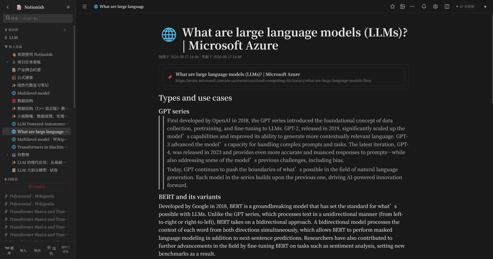

本地优先、开源免费的 Notion 风格笔记应用 · 数据归你所有

一款真正属于你自己的笔记应用
所有笔记保存在你自己的电脑上，离线可用，无需登录，没有云端存储。
20+ 种块类型，斜杠菜单、Markdown 快捷输入、拖拽排序、富文本格式。
表格/看板/列表/画廊/日历/时间线，支持公式、关联、汇总与筛选排序。
行内与行间公式，KaTeX 渲染 + 离线回退，点击即编辑源码。
内置 AI 面板，支持 RAG 检索、写笔记、出题、做闪卡（需本地服务）。
浏览器扩展一键剪藏网页内容，自动整理到笔记中。
浅色 / 深色双主题，Ctrl+\ 一键切换，深夜写作不伤眼。
MIT 协议开源，零依赖，零后端，可自由修改和分发。
选择适合你的方式开始使用